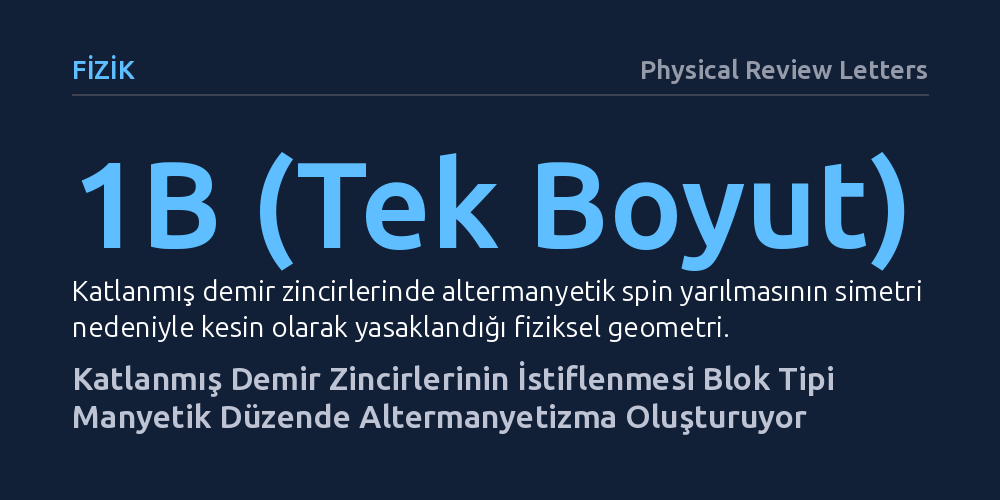

FIZIK · Physical Review Letters · 2026-10-25
Araştırmacılar, tek boyutlu katlanmış demir zincirlerinde teorik olarak engellenen altermanyetizmanın bu zincirler yan yana istiflendiğinde ortaya çıkıp çıkmayacağını inceledi. İlk ilkeler hesaplamaları, blok tipi manyetik dizilim ve zincirler arası elektron geçişi sayesinde K3Fe2Se4 bileşik ailesinde d-dalga altermanyetizmanın oluştuğunu gösterdi.
Net manyetik alan üretmeden spin denetimi sağlayan altermanyetizmanın, yalnızca klasik antiferromanyetiklerde değil, blok tipi manyetik düzene sahip zincir yapılarında da var olabileceğini gösteriyor.

Manyetik malzemeler dendiğinde akla gelen ilk ayrım ferromanyetizma ile antiferromanyetizma arasındaki karşıtlıktır. Demir gibi ferromanyetik maddeler dışarıya güçlü bir manyetik alan yayarak pusulaları saptırır veya metalleri çeker. Buna karşılık geleneksel antiferromanyetiklerde komşu atomların manyetik momentleri (spinleri) birbirine bütünüyle zıt yönelir ve net manyetik alan sıfırlanır. Son yıllarda yoğun madde fiziğinin odağına yerleşen altermanyetizma ise bu iki sınıfın sınırlarını aşan üçüncü bir temel manyetik hâle işaret eder: Dışarıya karşı net bir manyetik kutup sergilemez, ancak malzemenin içindeki elektronların spin doğrultularına göre farklı momentum ve enerji seviyelerinde hareket etmesini sağlar.
Bu durum spintronik teknolojisi açısından önemli bir potansiyel sunar. Bilgiyi elektronun sadece elektrik yüküyle değil, manyetik spiniyle işleyen aygıtlar, dışarıya kaçak manyetik alan yaymayan malzemelere ihtiyaç duyar; çünkü komşu bellek hücrelerinin birbirini manyetik olarak etkilemesi engellenmelidir. Ancak altermanyetizma bugüne dek çoğunlukla atomların spinlerinin tek tek zıt yöneldiği klasik Néel tipi antiferromanyetik örgülerde incelenmiştir. Araştırmacıların ele aldığı temel soru şudur: Atomların spinlerinin ikişerli öbekler halinde sıralandığı blok tipi manyetik düzenlerde ve zincir yapılarında da altermanyetik bir spin yarılması elde edilebilir mi?
Fizik yasaları, tamamen yalıtılmış tek boyutlu bir atom zincirinde altermanyetizmanın varlığına simetri kuralları gereği izin vermez. Tek boyutlu zincirlerde iki katlı dönme ve zaman tersinmesi simetrilerinin birleşimi elektronların spin durumlarının ayrışmasını kesin olarak engeller. Dolayısıyla bu özgün manyetik hâlin ortaya çıkabilmesi için kuramsal olarak yeni bir mekanizmanın ve simetri kırılmasının kurgulanması gerekiyordu.
Araştırma grubu, fiziksel bir laboratuvar sentezinden önce kuantum mekaniğine dayalı ilk ilkeler hesaplamalarına (yoğunluk fonksiyoneli teorisine) başvurarak bu simetri engelinin nasıl aşılabileceğini araştırdı. Tekil bir zincirde yasaklanan fiziksel durumların, zincirlerin yan yana dizilerek yarı tek boyutlu bir dizi hâline getirilmesiyle mümkün olabileceği hipotezi geliştirildi. Bu yaklaşımda amaç, tek boyutun getirdiği katı simetri kısıtını, komşu zincirler arasındaki elektron sıçramaları yoluyla kontrollü biçimde gevşetmekti.
Hesaplamalı modellerde, demir ve selenyum atomlarından oluşan katlanmış zincir yapıları temel alındı. Araştırmacılar, bu kuramsal mekanizmayı test etmek üzere kristal yapısı bilinen K3Fe2Se4 bileşik ailesini aday malzeme olarak belirledi. Sistemin elektronik bant yapısı, kristal örgü simetrileri ve manyetik taban durumları farklı manyetik dizilimler altında kapsamlı biçimde simüle edildi. Modellemede, zincir içi ve zincirler arası elektron etkileşimleri hesaba katılarak bant yarılmaları analiz edildi.
Hesaplamalar, zincir istifleme mekanizmasının başarılı biçimde çalıştığını ve altermanyetizmanın ortaya çıkması için iki kritik ön koşulun sağlandığını ortaya koydu. İlk koşul, demir atomlarının manyetik spinlerinin iki yukarı iki aşağı (↑↑↓↓) şeklinde dizildiği blok tipi bir manyetik düzenin kendiliğinden parite-zaman tersinmesi simetrisini kırmasıdır. İkinci koşul ise komşu zincirler arasında sıfır olmayan sonlu bir elektron sıçramasının bulunmasıdır. Bu iki unsur bir araya geldiğinde, zincirler tek boyutlu izole yapının simetri kısıtlamasından kurtulmakta ve sistem net bir manyetik momente sahip olmamasına rağmen belirgin bir spin yarılması sergilemektedir.
Çalışmanın dikkat çekici bulgularından biri, K3Fe2Se4 yapısının dört katlı dönme (C4) kristal simetrisine sahip olmamasına rağmen d-dalgası karakterinde bir altermanyetik yarılma barındırmasıdır. Dahası, katlanmış demir zincirlerinin sahip olduğu düşük simetri düzeyi, altermanyetik spin yarılmasının izotropik bir karaktere bürünmesini sağlamakta ve momentum uzayında bir sarma etkisi olarak ortaya çıkabilmektedir.
Böylece çalışma, gerçek uzaydaki blok tipi manyetik düzen ile momentum uzayındaki altermanyetik spin yarılmasını tek bir teorik çerçevede birleştirmiştir. Bulgular, katlanmış zincir yapılarının, dışarıya manyetik alan yaymayan sıfır momentli sistemlerde spin kutuplanması üretmek için ayarlanabilir bir platform sunduğunu doğrulamaktadır.
Bu çalışmanın ortaya koyduğu mekanizma, yeni nesil elektronik ve bilgi depolama aygıtları için pratik bir ufuk sunmaktadır. Günümüz manyetik belleklerinde ferromanyetik malzemelerin yaydığı kaçak manyetik alanlar, bellek hücrelerinin birbirine çok yakın yerleştirilmesini sınırlandırmaktadır. Altermanyetik malzemeler ise sıfır net manyetizma sayesinde komşu hücreleri etkilemeden kararlılık sağlar ve aynı zamanda klasik antiferromanyetiklerin sağlayamadığı spin akımı kontrolünü mümkün kılar. Katlanmış zincirlerin bu amaçla kullanılabilmesi, malzeme tasarımcılarına geleneksel üç boyutlu kristallerin ötesinde düşük boyutlu yeni bir çalışma alanı açmaktadır.
Bununla birlikte elde edilen sonuçların sınırlarını doğru değerlendirmek gerekir. Bu çalışma henüz deneysel olarak doğrulanmamış bir kuantum mekaniksel modelleme çalışmasıdır. K3Fe2Se4 ailesinin laboratuvarda sentezlenmesi, blok tipi manyetik düzenin oda sıcaklığında ya da aygıt koşullarında ne ölçüde kararlı kalacağının belirlenmesi ve öngörülen spin yarılmasının deneysel yöntemlerle doğrudan ölçülmesi gerekmektedir. Yazarlar, katlanmış demir zincirlerinin "sıfır momentli spintronik uygulamaları için ayarlanabilir bir platform" sunduğunu vurgularken, bu kuramsal öngörünün teknolojide yer bulabilmesi için deneysel malzeme sentezi çalışmalarının yapılması beklenmektedir.